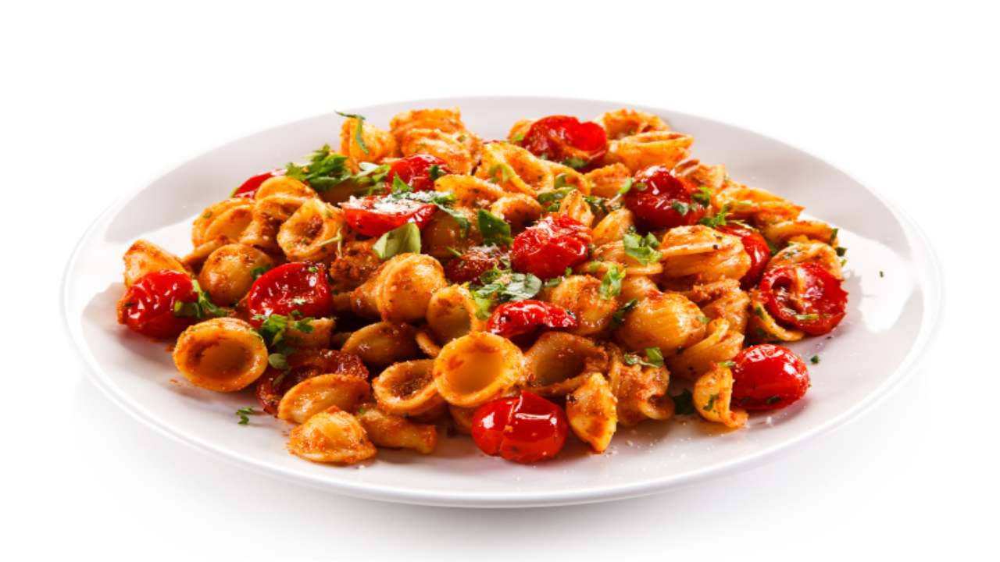

Orecchiette alla Positanese

Orecchiette alla positanese is a delightful pasta dish that captures the flavors of the Italian coastal town of Positano. This recipe combines the simplicity of traditional Italian ingredients with a burst of Mediterranean freshness. Here's how you can bring a taste of Positano to your kitchen:
Orecchiette Pasta Recipe
Ingredients:
- 250g of orecchiette pasta
- 200g of fresh Italian sausage
- 350g of cherry tomatoes
- 6 basil leaves
- 2 pinches of salt
- 3 tablespoons of grated Parmiggiano Reggiano
Steps:
- Cook the Italian Sausage:
- Take the Italian sausage (salsiccia) and cut it into small pieces. Discard the skin. Once finished, add the sausage to a cold skillet. Put the skillet on the stove, on medium low flame.
- While the sausage is cooking, take the cherry tomatoes and wash them thoroughly. Cut them in halves and save them for later.
- Once the sausage is cooked, take it out of the skillet and keep the grease. The pork fat IS the FLAVOR.
- Cook the Cherry Tomatoes:
- Add the cherry tomatoes to the skillet. You will cook them in the fat until they become soft.
- Cook the Orecchiette Pasta:
- In the meantime, take a pot, fill it with water and bring it to a boil. Once boiling, add the salt and the pasta. Cook the pasta following the instructions on the packet.
- Prepare the Tomato Paste:
- When the tomatoes are ready, transfer the composition in a food processor. Add the burrata and the basil leaves and blend them until a smooth, thick paste forms.
- Combine Ingredients:
- Transfer the paste back in the skillet, over a low flame. Add some pasta water and stir. Add the orecchiette and mix them in.
- Lastly, add the sausage and the cheese. Turn the flame off and mix for one final time.
- Serve:
- Garnish with more parmiggiano, basil leaves, or dried tomatoes. Serve with a cold glass of wine. Buon appetito!